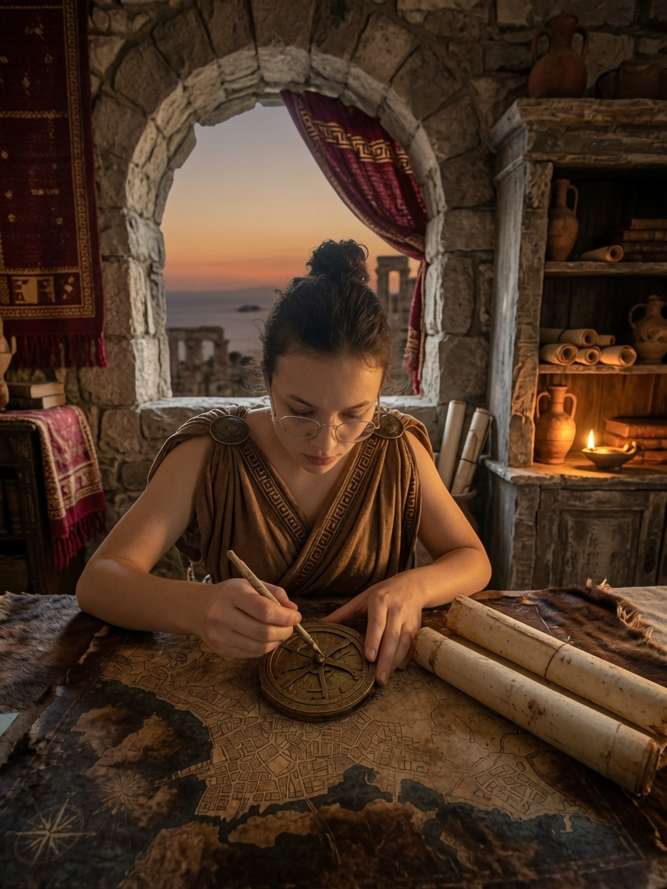
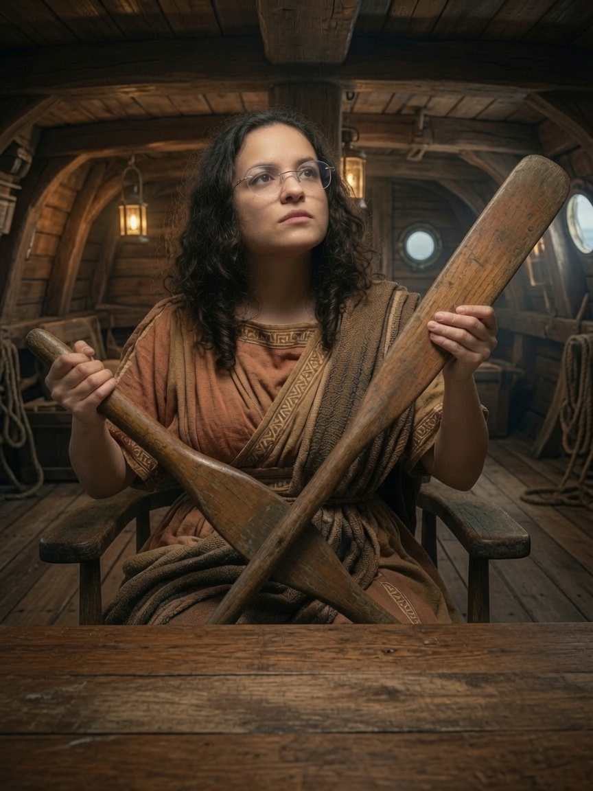
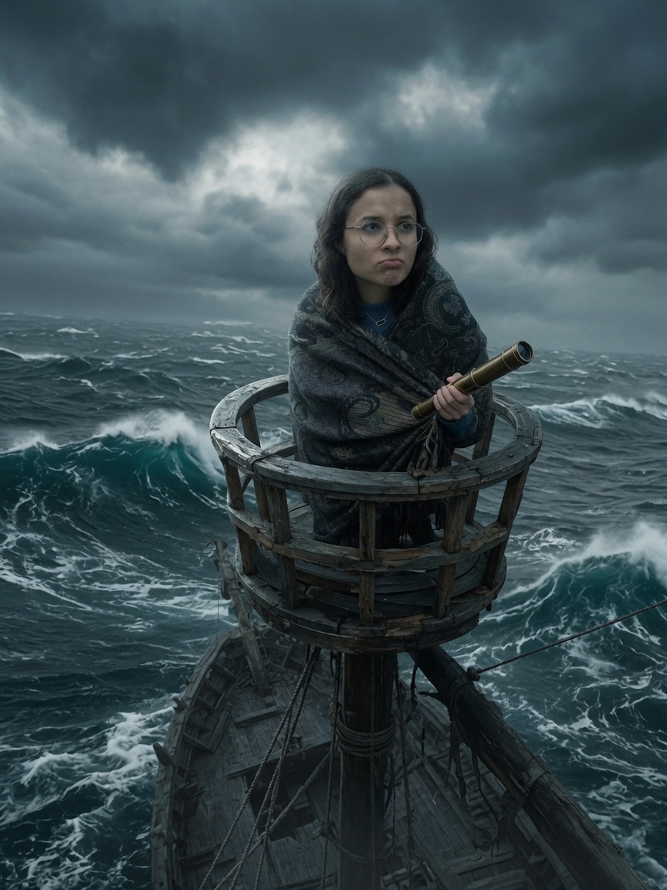
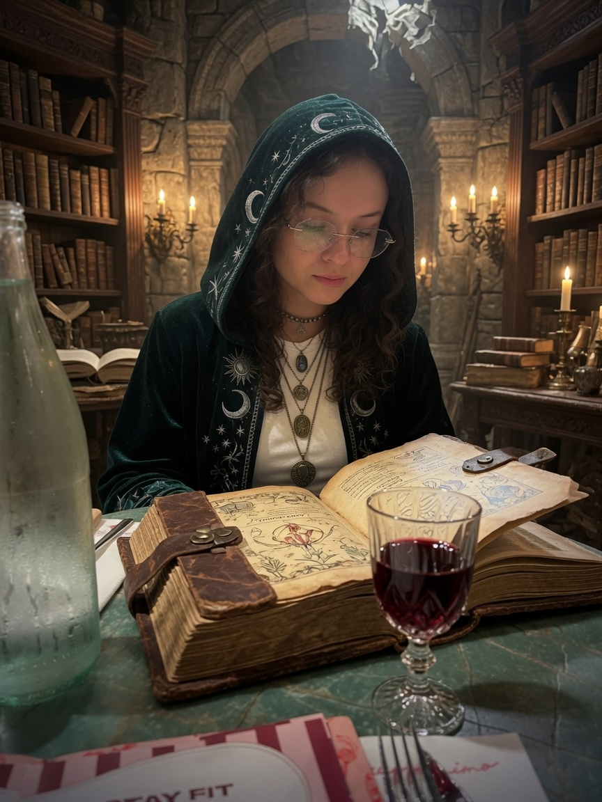
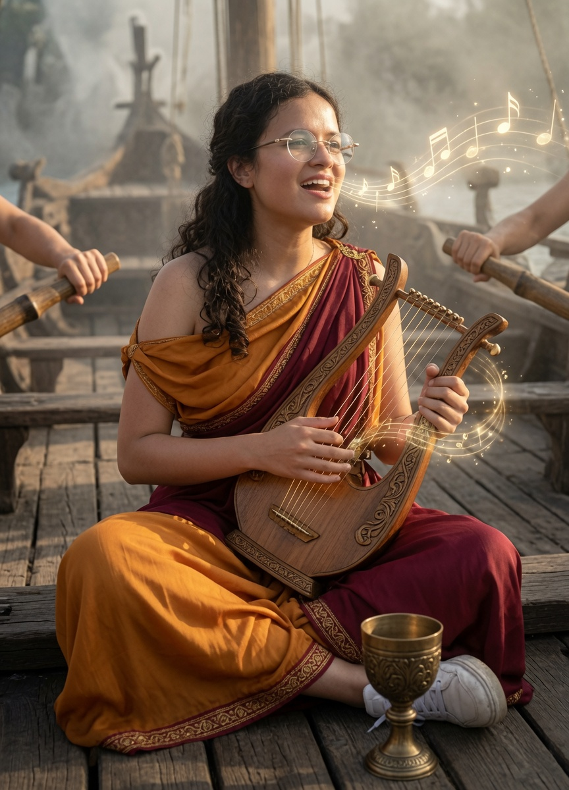
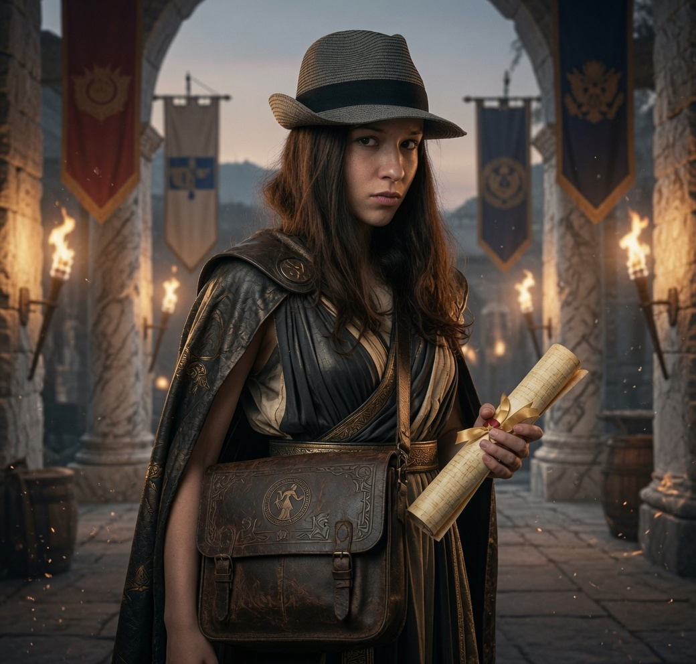
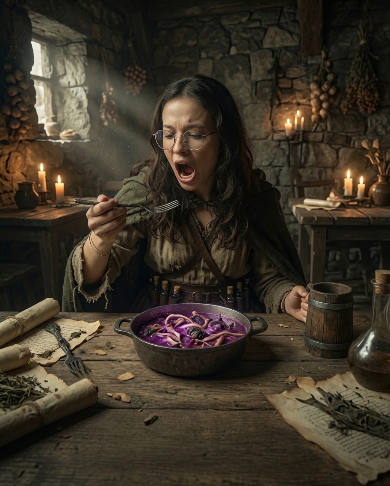
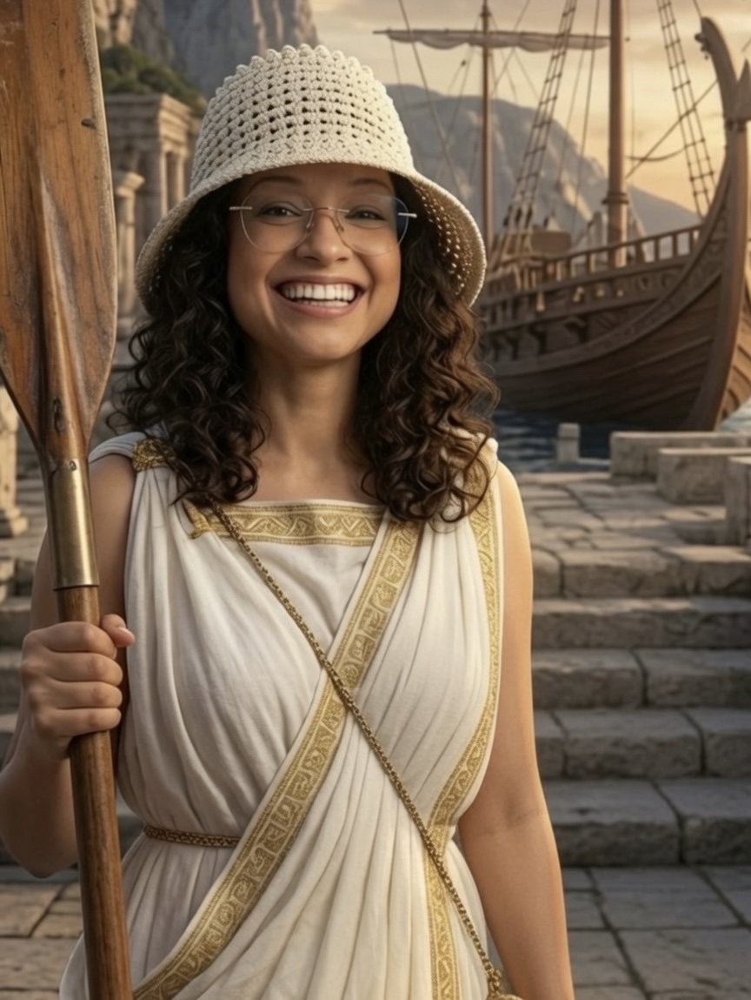

Le sablier magique s'écoule...
60:00
Continuer
Avant l'aube, sur le bateau, mes songes furent agités, les dieux me sont apparus en rêve. Peut-être ce message m'aidera-t-il à poursuivre ma quête et à comprendre comment utiliser ce livre magique.
🔑 Trouver un code
✦ ❧ ✦
Bravo Ulyssa !
Tu as percé une épreuve du grimoire magique.
✦ ❧ ✦
🎥 Voir la vidéo
Continuer
⬅ Retour
✦ ❧ ✦
Ton roi était définitivement bien productif, il a fait une autre tapisserie que voici.
✦ ❧ ✦
Continuer
Choisis soigneusement l'équipage pour cette mission et attention, une erreur pourrait avoir de lourdes conséquences.

Nautikos — La navigatrice
Elle calcule la route à suivre, lit les cartes, mesure la distance parcourue et celle qui reste. Un rôle essentiel en mer... mais complètement inutile ici, sauf si on arrive à utiliser ce savoir-faire pour nous retrouver dans cette ville...
Objet : une carte et une boussole

Kubernêtês — La pilote
Elle tient la rame-gouvernail à l'arrière et dirige le navire. Elle doit connaître les étoiles, les vents, les courants. C'est souvent une femme expérimentée, parfois presque aussi importante que le chef.
Objet : un gouvernail

Prôreus — La guetteuse / femme de proue
Postée à l'avant, elle surveille les dangers (rochers, terres, ennemis). Elle ne te servira à absolument rien, comme tu n'as plus de bateau.
Objet : une longue-vue

Mantis — La devin
Un devin accompagne le groupe pour interpréter les présages avant les décisions cruciales (partir, accoster, etc.), très utile pour avancer dans l'aventure.
Objet : des cartes et un feu

Aoidos — La musicienne
Elle chante pour maintenir le moral de l'équipage, rythme les rameurs de sa voix ou de sa lyre, et parfois même invoque la faveur des dieux par ses mélodies. Peut-être le seul rôle qui garde un sens ici : ses chants pourraient nous aider, mais comment ? Il faut que l'on se creuse la tête.
Objet : une voix douce

Kêryx — La diplomate
Présente surtout lors d'expéditions diplomatiques ou guerrières, elle porte les messages et gère les échanges protocolaires en escale.
Objet : un chapeau de qualité

Phagos — La mangeuse
Rôle peu glorieux mais bien réel dans les récits antiques : elle teste la nourriture avant tout le monde, repère le poison, le pourri, ou pire ce qui n'aurait jamais dû finir dans une marmite.
Objet : un plat de soupe aux poissons

Éretai — La rameuse
La majorité de l'équipage. Ce sont des femmes libres, souvent guerrières elles-mêmes : pas de distinction entre "marin" et "soldat" à cette époque. Elles rament et combattent si besoin.
Objet : une rame
Confirmer mon choix
Équipage choisi. Bonne chance pour la suite de l'aventure !